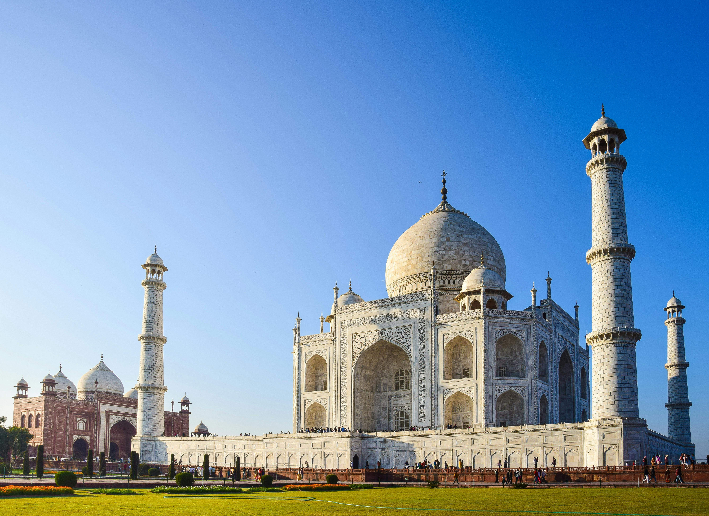
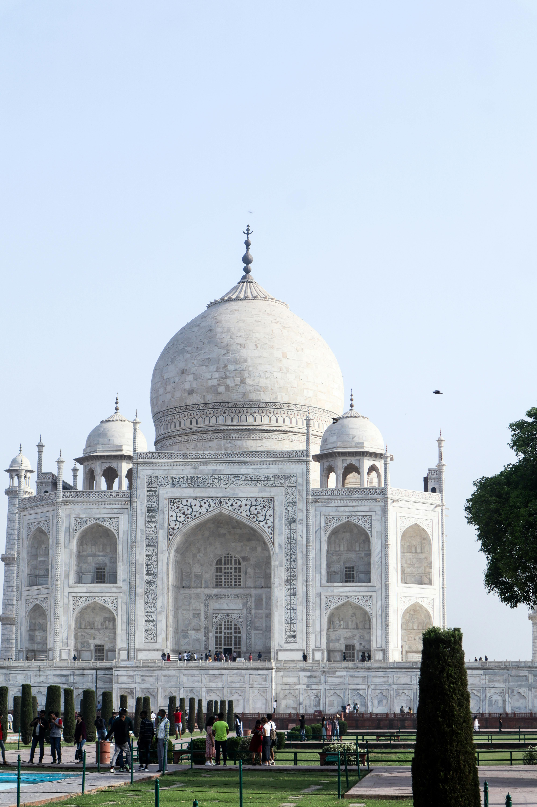
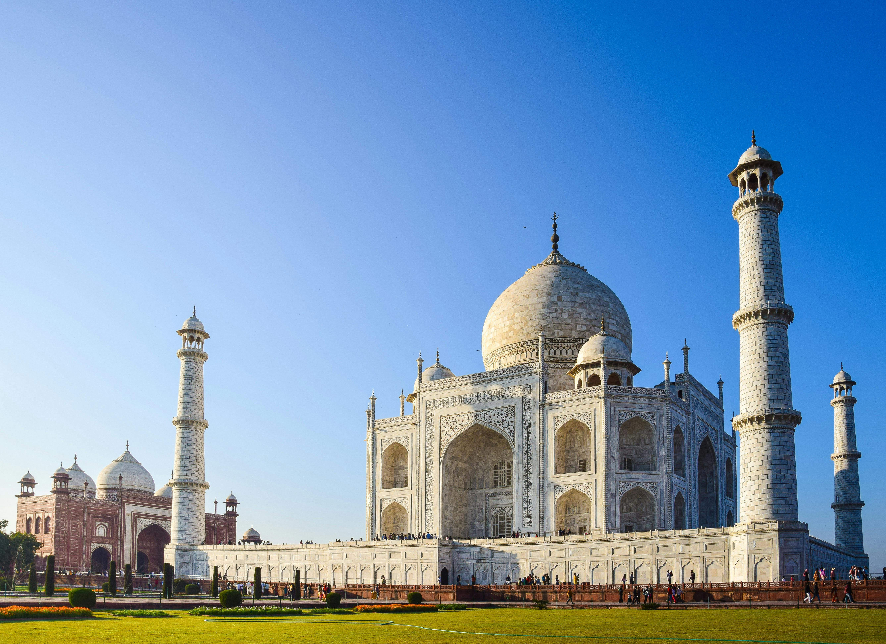
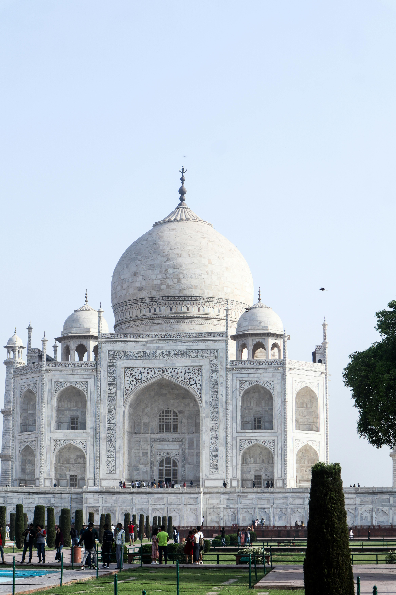

Bibi Ka Maqbara
 



Bibi Ka Maqbara – History
Location:
City: Aurangabad (now Chhatrapati Sambhaji Nagar), Maharashtra, India Situated around 3 km from the city center, it is a major historical and tourist cite
🛕 Historical Background:
Built by: Prince Azam Shah, the son of Mughal Emperor Aurangzeb In memory of: His mother, Dilras Banu Begum (also known as Rabia-ud-Daurani), Aurangzeb’s first wife Year of construction: Between 1660–1679 AD Architect: Ata-ullah (son of Ustad Ahmad Lahauri, the chief architect of the Taj Mahal) Engineer: Hanspat Ra Located in Chhatrapati Sambhaji Nagar (formerly Aurangabad), it was commissioned around 1668 and is often called the "Taj Mahal of the Deccan" due to its striking resemblance to the Taj Mahal, though it was built with a much smaller budget
🎯 Purpose of Construction:
It was constructed as a mausoleum (tomb) for Dilras Banu Begum after her death in 1657 due to childbirth. Azam Shah aimed to replicate the Taj Mahal, built by his grandfather Shah Jahan for Mumtaz Mahal. It was intended to showcase filial devotion and serve as a lasting tribute to his mother